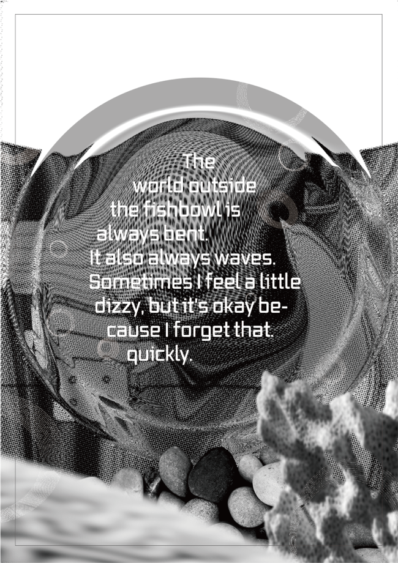
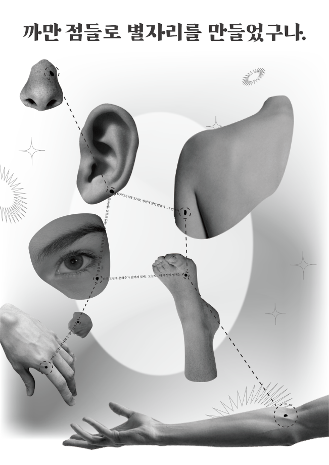
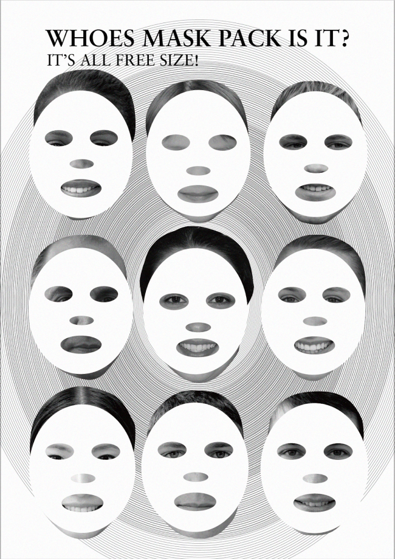
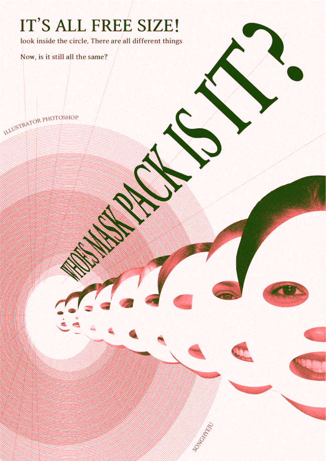
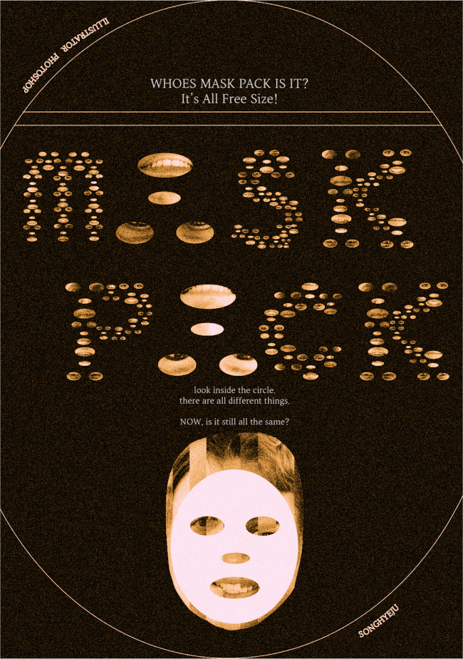
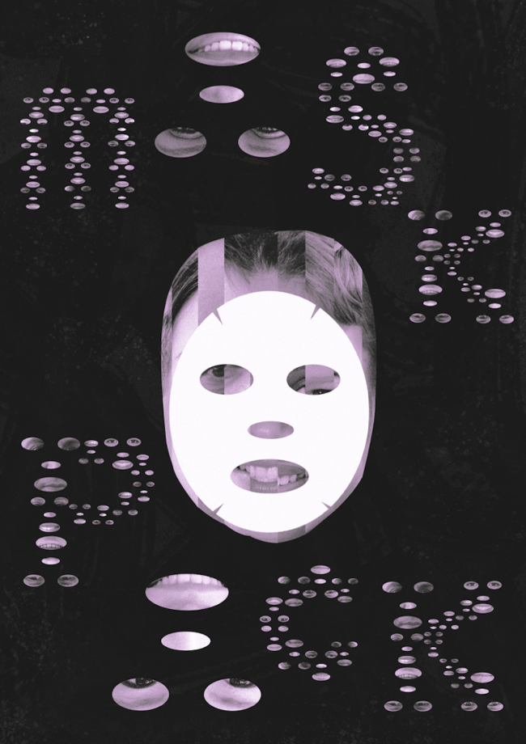
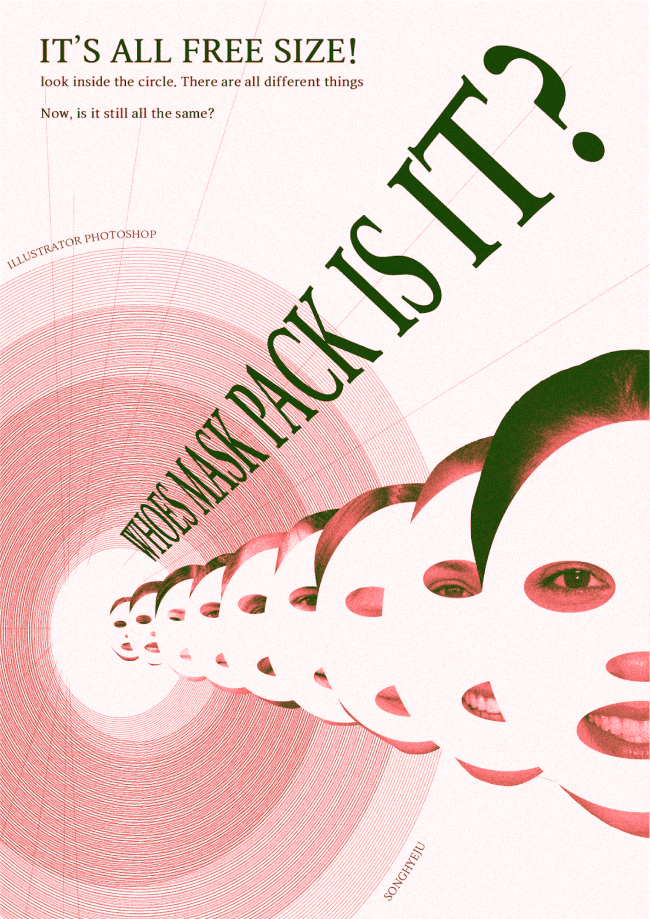
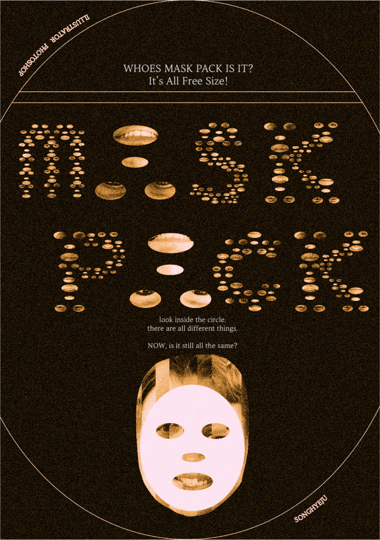
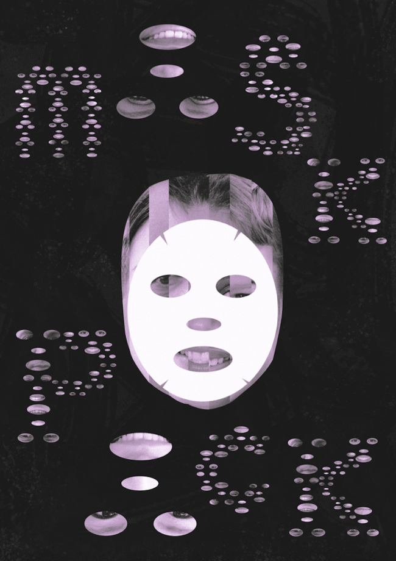

Project
Contact
thd7451@naver.com
Designer
Shape Research
송혜주
SHAPE RESEARCH
Category
Shape Poster1 / Shape Poster2 / Shape Poster3
세가지 기본 도형 중 ‘원’을 주제로 포스터들을 제작했다.
Shape poster_1
Shape Porster_2
WHOES MASK PACK IS IT?
Poster
Poster
Poster
신체의 점, 둥근 어항 속 물고기의 시점, 마스크 팩을 주제로 세가지 시안을
제작해보았다.
세가지 시안 중 마스크팩을 이용한 포스터를 발전시켰다.
마스크 팩의 크기는 동일하지만, 사용자의 얼굴에 따라 원 안의 눈코입이 다르게
추출된다는 점과, 눈코입 구멍을 거꾸로 했을때 알파벳 ‘A’가 연상된다는 점을
이용하여 ‘MASK PACK TEXT’를 디자인, 사용하였다.
최종 포스터로, 총 세가지 유형의 포스터를 제작했다.
특히 참여형 포스터는 참여자의 얼굴 모양을 직접 추출해볼 수 있도록
제작했다.



 




